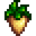
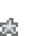
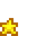
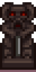
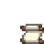

Template:Overlayimg/doc
Description
This template overlays one image on top of another. It can be called directly, but is also used by Template:Recipe and Template:Quality.
Parameters
| Parameter | Required | Notes |
|---|---|---|
| First (unnamed) parameter | Yes | Name of background image (without extension such as .png) |
| type | Yes | Type of foreground image. Valid values: Aged Roe, Honey, Jelly, Juice, Pickles, Recipe, Star, Wine All values other than star are used to produce an image, and are case-sensitive. |
| width | No | Desired display width of background image (do not include "px") Valid values: 48, 36, 32, 24 (other values will be accepted, but may produce undesired results) Default value: 24 |
| quality | No | If type=star, this parameter specifies the quality star to use. Valid values: 4, Iridium, 2, Gold, 1, Silver, 0. (Case insensitive) If type=star and this parameter is omitted, quality is assumed to be normal/base (no-star) quality. This parameter should be omitted for any type other than star. |
| center | No | If the image is to be displayed in a table cell, then setting center=true will center the image inside the cell. |
Examples
| Template Call | Result |
|---|---|
{{Overlayimg|Parsnip|type=star|quality=silver|width=36}}
|
  |
{{Overlayimg|Parsnip|type=star|quality=gold|width=36|center=true}}
|
 |
{{Overlayimg|Fish Stew|type=Recipe}}
|
|
{{Overlayimg|Autumn's Bounty|type=Recipe|width=48|center=true}}
|
|
{{Overlayimg|Wicked Statue|type=Recipe|width=36|center=true}}
|
  |